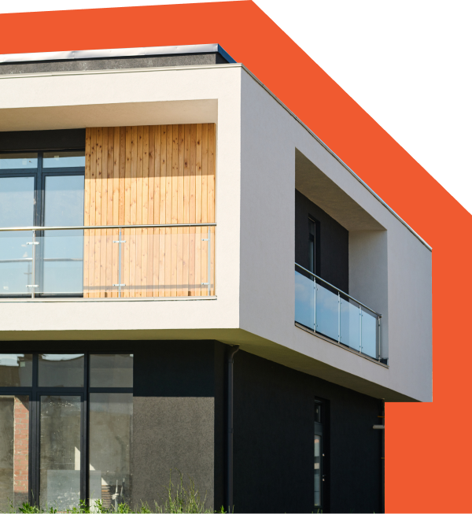

Servicio local en Quilmes
Electricista y albañileria en Quilmes
En Quilmes trabajamos con pedidos de electricidad, albañileria y arreglos generales orientados a resolver problemas reales del hogar o del comercio. Desde una falla electrica hasta una pared que necesita reparacion, organizamos la visita para evaluar, presupuestar y ejecutar con materiales adecuados segun el alcance del trabajo.
El servicio sirve tanto para urgencias como para mantenimiento planificado, especialmente cuando queres agrupar varias tareas pendientes y dejarlas resueltas con una misma coordinacion.
Quilmes
Cobertura en Quilmes centro, Quilmes Oeste, Bernal, Don Bosco, Ezpeleta y corredores hacia Solano.
Servicios en Quilmes
Arreglos para el hogar con respuesta local
Atendemos mantenimiento y reparaciones para viviendas, locales, departamentos y propiedades cerca del centro o barrios residenciales. Cubrimos referencias habituales como Avenida Calchaqui, Yrigoyen, Mitre, Brandsen, 12 de Octubre y zonas cercanas a la estacion Quilmes, coordinando cada visita segun urgencia, acceso y tipo de propiedad.
Electricista a domicilio
Servicio disponible en Quilmes para propiedades particulares, comercios y consorcios que necesitan una solucion clara, segura y bien coordinada.
Urgencias electricas
Servicio disponible en Quilmes para propiedades particulares, comercios y consorcios que necesitan una solucion clara, segura y bien coordinada.
Albañileria general
Servicio disponible en Quilmes para propiedades particulares, comercios y consorcios que necesitan una solucion clara, segura y bien coordinada.
Reparaciones del hogar
Servicio disponible en Quilmes para propiedades particulares, comercios y consorcios que necesitan una solucion clara, segura y bien coordinada.
Mantenimiento para comercios
Servicio disponible en Quilmes para propiedades particulares, comercios y consorcios que necesitan una solucion clara, segura y bien coordinada.
Arreglos para consorcios
Servicio disponible en Quilmes para propiedades particulares, comercios y consorcios que necesitan una solucion clara, segura y bien coordinada.
Atencion en Quilmes y alrededores
La cobertura incluye Quilmes centro, Quilmes Oeste, Bernal, Don Bosco, Ezpeleta y corredores hacia Solano. Tambien podemos coordinar trabajos en otras localidades de Zona Sur cuando el recorrido y la disponibilidad lo permiten.
- Diagnostico de fallas electricas y reparaciones seguras.
- Arreglos de albañileria, humedad, revoques y terminaciones.
- Mantenimiento para casas, departamentos, locales y consorcios.
- Presupuestos claros antes de iniciar el trabajo.
Preguntas frecuentes
FAQ de servicios en Quilmes
Respuestas detalladas para saber como trabajamos, que cubrimos y que conviene revisar antes de pedir un electricista, albañil o servicio de mantenimiento.

¿Necesitas un arreglo en Quilmes?
Contanos que falla, donde estas y que urgencia tiene. Con esa informacion coordinamos una visita o te orientamos sobre los pasos mas convenientes para resolverlo.
Llamar ahora